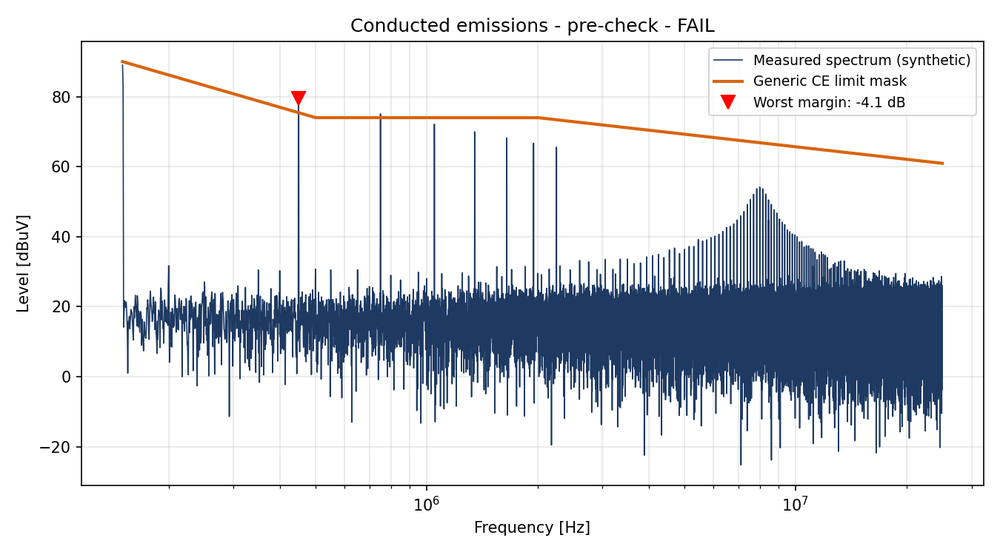
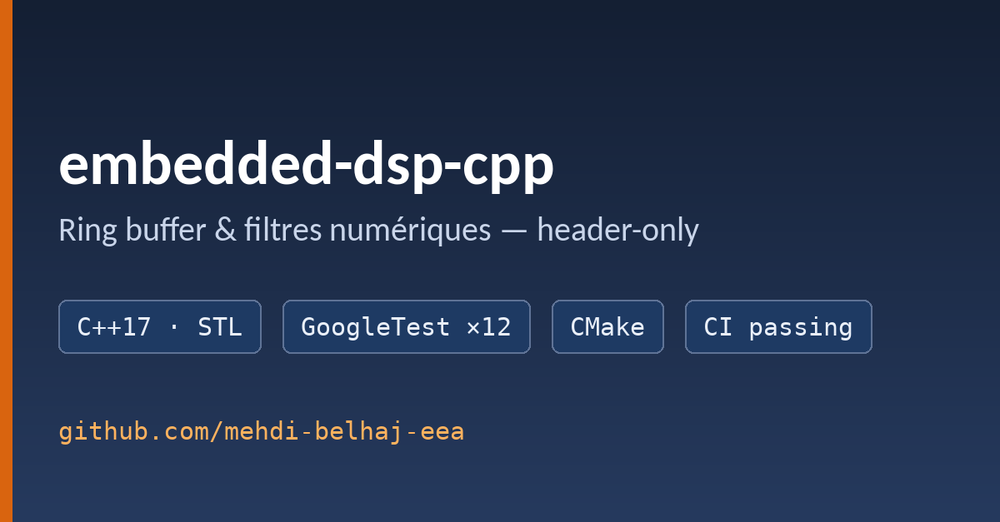

Projets
Projets publics sur GitHub
Testés, avec intégration continue — l'état des badges est celui des serveurs GitHub, en direct.

scope-emi-toolkit
Automatisation d'essais en Python : lecture des exports CSV d'oscilloscope (Tektronix, Rigol), spectre fenêtré calibré en dBµV, comparaison à un gabarit d'émissions conduites 150 kHz – 152 MHz et rapport réussite / échec. Données 100 % synthétiques.
Voir le dépôt ↗
embedded-dsp-cpp
Bibliothèque header-only pour cible embarquée : buffer circulaire sans allocation dynamique, moyenne glissante, filtre IIR passe-bas.
Voir le dépôt ↗Projets universitaires
Commande d'un moteur BLDC sur FPGA
Autopilotage et MLI modélisés, PWM et mesure de vitesse en VHDL sur carte DE0-Nano (Cyclone IV), processeur NIOS II, loi de commande discrétisée et codée en C par interruptions ; asservissement validé sur moteur réel.
Commande de machine asynchrone
Simulation de la machine et de sa commande : boucles imbriquées de courant, de flux et de vitesse, limitations, tests de robustesse.
Alimentation à découpage
Commande en courant crête et boucle de tension, filtrage d'entrée et de sortie, mesure des performances.